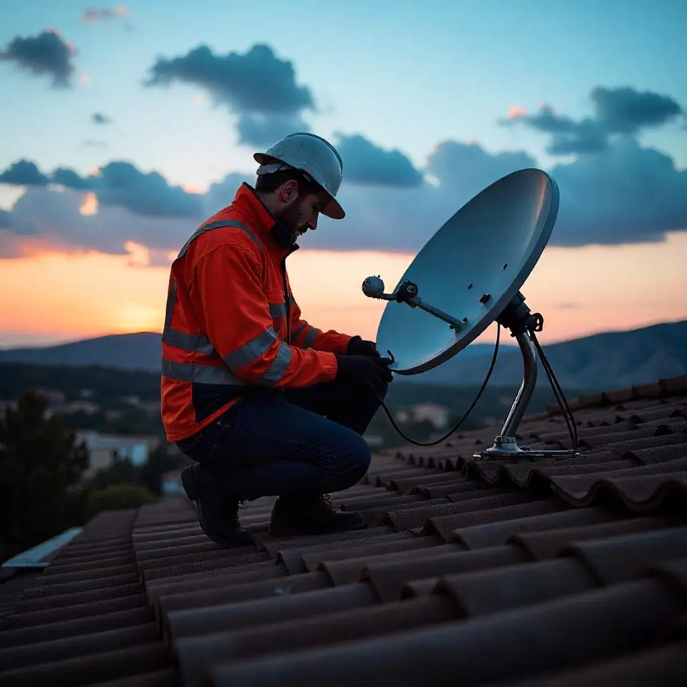

La provincia de Almería, con su diversa geografía que combina costa, desierto y montaña, presenta desafíos únicos para la conectividad a internet. Mientras que los núcleos urbanos disfrutan cada vez más de la fibra óptica para empresas, muchas empresas y viviendas en zonas rurales aún luchan por acceder a una conexión estable y de alta velocidad. ¿Significa esto que deben resignarse a la brecha digital? Afortunadamente, no.
En SATEKOR Telecomunicaciones, somos especialistas en llevar soluciones de conectividad a las zonas más remotas de Almería. Entendemos que una conexión a internet fiable es tan crucial para una finca agrícola, un hotel rural o una nave industrial aislada como lo es para una oficina en el centro de la ciudad. Exploremos algunas de las opciones más viables cuando la fibra óptica no es una alternativa.
1. Internet por Satélite: Cobertura Universal
El internet por satélite ha evolucionado enormemente. Las nuevas constelaciones de satélites de órbita baja (LEO), como Starlink, han revolucionado el sector ofreciendo velocidades considerablemente más altas y, lo que es más importante, una latencia mucho menor que los satélites geoestacionarios tradicionales. Esto lo convierte en una opción muy atractiva para empresas rurales.
Ventajas:
- Cobertura prácticamente total: Llega a cualquier lugar con vista despejada al cielo.
- Velocidades competitivas: Suficientes para la mayoría de las aplicaciones empresariales, incluyendo streaming y videollamadas.
- Instalación relativamente sencilla: Requiere una antena parabólica y un módem.
Consideraciones:
- Puede verse afectado por condiciones meteorológicas extremas (aunque cada vez menos).
- Algunos planes pueden tener limitaciones de datos o políticas de uso justo.
2. Radioenlace (Wimax/LMDS): Conexión Dedicada y Robusta
Los sistemas de radioenlace, a menudo conocidos por tecnologías como Wimax o LMDS (Local Multipoint Distribution Service), utilizan ondas de radio para transmitir datos entre una estación base y una antena receptora en las instalaciones del cliente. Es una solución excelente para proporcionar un ancho de banda dedicado y simétrico (misma velocidad de subida y bajada).
Ventajas:
- Alta fiabilidad y estabilidad.
- Baja latencia, ideal para aplicaciones en tiempo real como VoIP o VPNs.
- Ancho de banda garantizado y velocidades simétricas.
- Menos susceptible a la congestión que otras tecnologías compartidas.
Consideraciones:
- Requiere línea de visión (LOS) directa entre la antena del cliente y la estación base del proveedor.
- La cobertura depende de la infraestructura desplegada por el operador local.

3. Conexiones 4G/5G Optimizadas: Flexibilidad Móvil
Aunque la cobertura móvil no siempre es perfecta en zonas rurales, las tecnologías 4G LTE y, cada vez más, 5G, pueden ofrecer una solución viable, especialmente cuando se optimizan con el equipamiento adecuado.
Ventajas:
- Rápido despliegue: Puede estar operativo en poco tiempo.
- Flexibilidad: No requiere instalación de cableado fijo.
- Las velocidades de 5G pueden ser muy elevadas si hay cobertura.
Consideraciones:
- La calidad y velocidad dependen de la cobertura y congestión de la red móvil local.
- Los planes de datos ilimitados para empresas pueden ser más costosos.
- Es crucial usar antenas exteriores de alta ganancia y routers profesionales para maximizar la señal y la estabilidad, algo en lo que SATEKOR tiene amplia experiencia.
¿Cuál es la Mejor Opción para tu Negocio Rural en Almería?
La respuesta depende de varios factores: tu ubicación exacta, las necesidades de velocidad y fiabilidad de tu negocio, el presupuesto disponible y la infraestructura existente en la zona. En SATEKOR Telecomunicaciones:
- Realizamos un estudio de cobertura y viabilidad exhaustivo para determinar las mejores opciones tecnológicas para tu caso particular.
- Te asesoramos de forma transparente sobre las ventajas y limitations de cada solución.
- Nos encargamos de la instalación profesional de los equipos y de su configuración óptima.
- Ofrecemos soporte técnico y mantenimiento para garantizar que tu conexión funcione siempre a la perfección.
No permitas que la falta de fibra óptica frene el crecimiento de tu empresa en el entorno rural de Almería. Contacta con SATEKOR y descubre cómo podemos conectar tu negocio al mundo digital con soluciones eficientes y fiables.